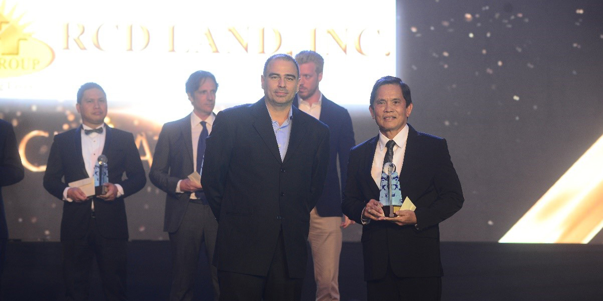
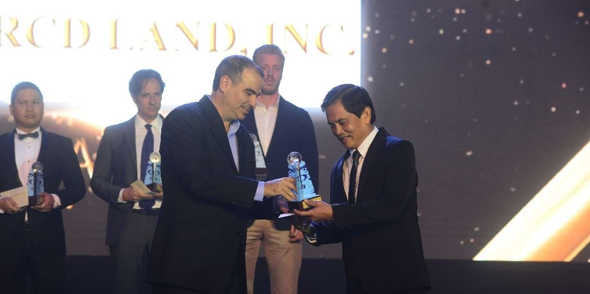
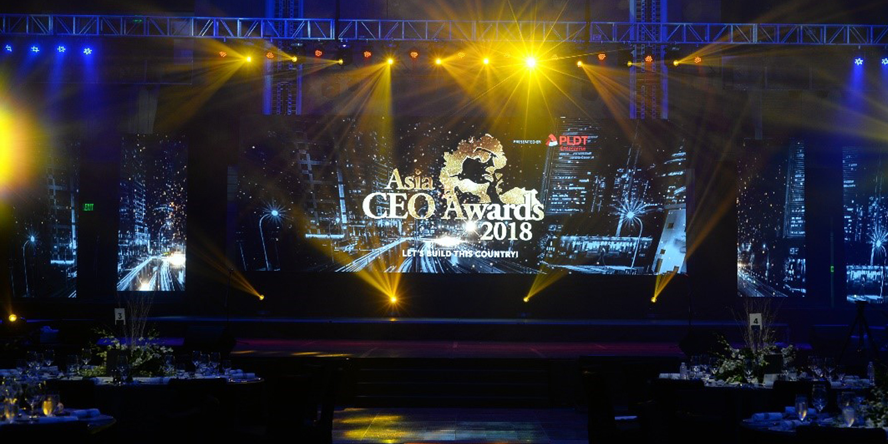
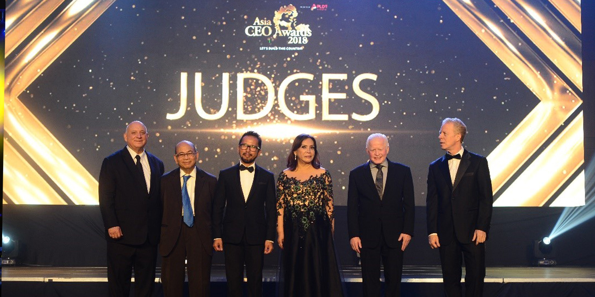

<section class="mt-[81px] py-20 bg-[#f7f7f7]">
    <div class="max-w-7xl mx-auto px-4">

        <!-- Section Header -->
        <div class="mb-12">
            <div class="max-w-5xl mx-auto flex items-start space-x-4">
                <div class="w-1 h-40 bg-green-500"></div>
                <div>
                    <h2 class="text-4xl font-bold text-gray-800">RCD Land reaps Circle of Excellence Award for the SME
                        Company of the Year 2018</h2>
                    <p class="text-gray-600 text-base mt-1 max-w-2xl">
                        RCD Land Inc. has been awarded the Circle of Excellence Award for the SME Company of the Year in
                        the Asia CEO Awards 2018.
                    </p>
                </div>
            </div>
        </div>

        <!-- Centered Photo -->
        <div class="flex justify-center my-12">
            
        </div>

        <!-- Author/Meta Info -->
        <div class="flex justify-center mb-8">
            <span class="text-sm text-gray-700">
                <span class="font-semibold">Author:</span> &nbsp;&nbsp;
                <span class="font-semibold">Category:</span> Awards&nbsp;&nbsp;
                <span class="font-semibold">Date:</span> <span>Year 2018</span>
            </span>
        </div>

        <!-- Article Content -->
        <div class="max-w-3xl mx-auto text-gray-700 text-sm leading-relaxed px-4">
            Mr. Rolando C. Delantar, RCD Land’s President and CEO, accepted the award signifying the company’s success
            in the small and medium-sized enterprises category. The award is open to any Profit-Making Company that
            achieved important success in the small and medium-sized enterprises (SMEs) category, defined as
            non-subsidiary, independent firms employing between 10 and 500 employees.
            </p>

            <!-- photo -->
            <div class="flex justify-center my-12">
                
            </div>
            <p class="mt-6"></p>

            Through years of growth and evolution, RCD Land Inc. is revolutionizing affordable housing communities for
            the Filipinos which enables a balanced and sustainable lifestyle for the homeowners. It currently focuses in
            the high-growth neighboring provinces of Metro Manila such as Cavite, Bulacan, Batangas, Bataan, and Quezon.
            </p>
            <p class="mt-6"></p>

            The Asia CEO Awards is the largest business awards event in the Philippines and Southeast Asia which aims to
            recognize top companies and innovative leaders in various fields. It also aims to promote the Philippines as
            a premier business destination. This year’s theme, “Let’s build this country”, is set to put the spotlight
            towards the individuals and organizations that have made an impact to the Philippines’ economic progress and
            success.
            </p>

            <!-- photo -->
            <div class="flex justify-center my-12">
                
            </div>

            <p class="mt-6">
                “We are not just after beautiful trophies or titles. The Asia CEO Awards is a bridge to building this
                country, by bringing together the best of the best to create a community and a movement that will pull
                more leaders into this circle of excellence. We are what excellence is. We are the future of this
                country. We are the Asia CEO Awards. Cheers to a brighter, better, and bolder Philippines ahead! Let’s
                Build This Country!” said Richard Mills, Chairman of Asia CEO Awards.
            </p>
            <p class="mt-6">
                This year's awards event featured 14 categories namely: CNN Philippines Executive Leadership Team of the
                Year, Healthway Wellness Company of the Year, ICM CSR Company of the Year, I-Remit Heart for OFW's
                Company, JLL Expatriate Executive of the Year, Kalibrr Top Employer of the Year, LBC Business Solutions
                SME Company of the Year, Philam Life Young Leader of the Year, Regus Entrepreneur of the Year, Sitel
                Service Excellence Company of the Year, Smart Enterprise Global Filipino Executive of the Year, SPi
                Global Technology Company of the Year, United Neon Most Innovative Company of the Year, and WEnergy
                Green Company of the Year.
            </p>

            <!-- photo -->
            <div class="flex justify-center my-12">
                
            </div>

            <p class="mt-6">
                A board of judges determined the Circle of Excellence Awardees for each category. This year’s board
                includes former Finance Secretary Cesar Purisima, Philippine Economic Zone Authority Director General
                Charito Plaza, economist Dr. Bernie Villegas, former Philippine Ambassador to the U.S. Jose Cuisia,
                architect Jun Palafox, Convergys Managing Director for Asia Pacific, Europe, Middle East and Africa
                Marife Zamora, former IT and Business Process Association of the Philippines CEO Oscar Sañez, and Asia
                CEO Awards Chairman Richard Mills.
            </p>
            <p class="mt-6">
                The privilege of taking part in the prestigious Circle of Excellence for the SME Company of the Year
                continues to motivate us, RCD Land Inc., to further excel in what we do which is to improve the lives of
                Filipinos by building and providing affordable yet quality homes. More than just acquiring this award,
                the company takes pride in building for a cause and contributing to the growth of the Philippines. We
                believe that better industries and leaders make a better country, which results to a better country that
                produces greater opportunities to improve the lives of its people. With this, we continue to uphold our
                mission to build quality and affordable homes for the Filipinos.
            </p>
            <p class="mt-6">
                To know more about RCD Land Inc., you may visit us at www.rcdland.com or contact us at 0917 700 1109 0r
                (02) 617 5364.
            </p>